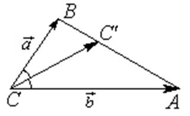

П 4.1 №3
В треугольнике  разложите
биссектрису
разложите
биссектрису  по базису векторов
по базису векторов  и
и  .
.
разложите
биссектрису по базису векторов и .РЕШЕНИЕ:
Пусть ,  , лежит
на стороне
, лежит
на стороне  .
.
, лежит
на стороне ., где .
Воспользуемся свойством биссектрисы треугольника:
и тем,
что  .
.
.
Отсюда следует, что  .
.
.Итак,
Ответ: .